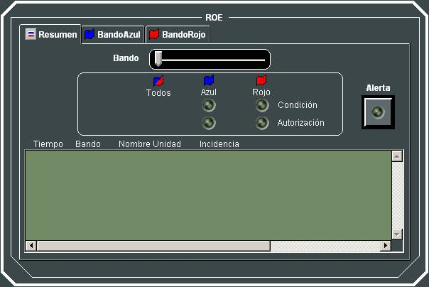
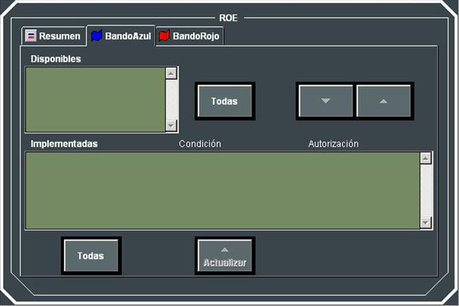

Control de Conductas (ROE)
Mediante este diálogo, el instructor podrá, a su voluntad activar (implementar) o desactivar las ROEs por cada bando, seleccionándolas del perfil ROE del Ejercicio, simulando de esta manera los diferentes escenarios ROE que puedan aparecer.
En la ventana principal se indica mediante leds, si en el momento actual se está cumpliendo alguna condición o si se está produciendo algún suceso autorizado o prohibido de las ROEs actualmente implementadas para cada bando. Además, se muestra un registro de todos los cumplimientos de condiciones y de sucesos autorizados o prohibidos de las ROEs implementadas, durante el ejecución del Ejercicio. Esta lista puede ser filtrada por bando (Todas / Azul / Rojo).

En las pestañas de Perfil Azul y Perfil Rojo, el instructor puede consultar y activar o desactivar las ROEs implementadas para cada bando. Para activar (implementar) una ROE, el instructor deberá seleccionarla de entre las disponibles para el bando en la lista de la izquierda, y pasarla a la lista de la derecha. Para que la ROE deje de estar implementada deberá pasarla de nuevo a la lista de la izquierda. Inicialmente aparecerán como implementadas las que así se hayan configurado en Preparación.
En la lista de ROE implementadas, se muestra el nombre de la ROE y los del condicionante y autorización que la definen. Junto al nombre del condicionante se muestra un led que se encenderá cuando se active dicho condicionante. Cuando se activa un condicionante, se mantendrá activo hasta que el instructor pulse actualice el estado de dicha ROE, seleccionándola y pulsando Actualizar, en cuyo caso se volverá a evaluar en ese momento si está activo o no. De forma análoga, cuando produce una violación de una autorización, se enciende el led correspondiente, que también permanecerá activo hasta que el instructor actualice el estado de dicha ROE.
